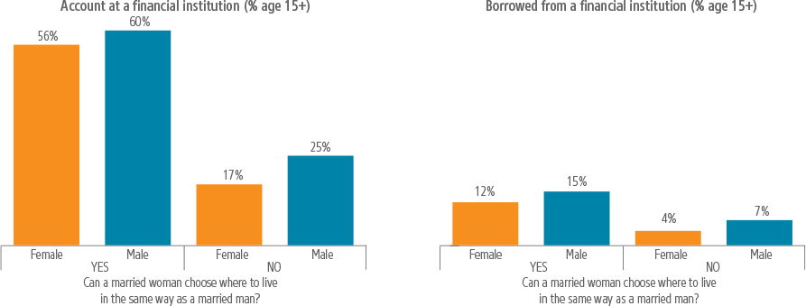
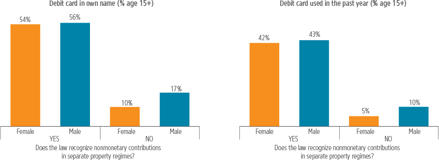
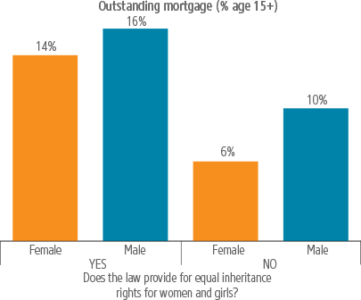
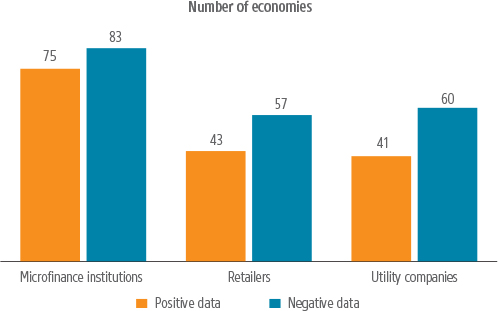

Discriminatory laws can affect women’s demand for financial services and impede their ability to save, borrow, pay orinsure themselves against risk.
In 2014 Madame Ngetsi wanted to formalize a small business that she was running in Kinshasa, the Democratic Republic of Congo. To do so, she would need to register her company and open a bank account. Along the way, she might need a loan to grow her business. But legally, Madame Ngetsi needed her husband’s permission to do any of these activities under the family code that existed at the time.
This is just one example of how women’s decision making is limited by laws interfering with their economic activities. Such laws can affect women’s ability to save, borrow, pay or insure themselves against risk.
Discriminatory laws can affect women’s demand for financial services. For example, limited access to and control over property constrain women’s ability to provide collateral for loans. Similarly, gender differences in getting identification can make it more difficult for women to open bank accounts, especially where there are stringent identification requirements to do so.
Financial inclusion involves access to and usage of various financial services, such as savings, payments, credit and insurance from formal service providers. Basic financial inclusion can entail a simple deposit account at a bank or a transaction on a mobile money service account. It can also encompass loans from formal financial institutions or insurance products that allow people to manage their financial risks.
The World Bank Group’s 2014 Global Findex database revealed that although almost all OECD high-income economies have universal access to financial services, only slightly more than half of developing economies do. Globally 61% of adults have an account at a financial institution. However, 2 billion people remain unbanked, of which more than half are women. When it comes to women’s financial inclusion, a large gender gap in access to and usage of financial services persists.1
Know Your Customer (KYC) requirements oblige financial institutions to verify a customer’s identity by checking and confirming identification. Such rules are an important part of anti-money laundering and countering the financing of terrorism regimes, and help preserve the integrity of financial markets. However, they can sometimes exclude segments of the population who are more likely to lack identification—such as low-income populations or women. A survey conducted by the Alliance for Financial Inclusion reports that 25% of the respondents perceived KYC requirements as a barrier to women.2
Gender inequality can play a role in making access to identification more burdensome for women, as some laws and regulations make it more difficult for women to obtain a national identity (ID) card or passport or register the birth of a child in the same way as men (box 3.1). Women, Business and the Law data show there are at least 48 legal differences for women compared with men when applying for an ID or passport in the economies examined.
Box 3.1 REGISTERING A BIRTH
Having a birth certificate—and the registration that precedes it—is foundational. Birth certificates are the first step toward a legal identity and are required to obtain passports, ID cards, marriage certificates and driver’s licenses. Birth certificates may also be needed to obtain family allowances, social security and insurance, enroll children in school and access credit and pensions.
However, in some economies, mothers cannot register the birth of a child in the same way as fathers. In Greece, the father is legally obligated to register the child; the mother needs a special mandate by a notary attorney to do so. In Barbados, Fiji and Namibia, a mother can legally register the newborn only when the father is dead, absent or incapable. And in The Gambia, the father is legally required to register children born within a marriage, and the mother has this legal responsibility for children born outside marriage.
Most economies require a parent to show notification of a live birth, issued by the hospital, and some form of personal identification. Economies without robust civil identification systems often allow proof of identity through witnesses, such as village elders, teachers or religious leaders. In El Salvador and Senegal, for example, two witnesses with an identity document can attest for the registration when the parents lack documentation. By contrast, Morocco requires extensive documentation, including a copy of the mother’s birth certificate, family book and records of the child’s first vaccinations.
Unmarried parents must overcome significant hurdles where the system does not recognize children born outside marriage—as is the case in Bahrain and Nepal—or requires additional procedures for registering their birth, as in Iraq, Jordan and Morocco, where an unmarried parent must obtain a court order to register their child.
Birth registration and birth certificates should be free, to encourage parents to register their children and get a certificate. However, some economies, such as Lebanon, Pakistan and Tajikistan, charge for registering births.
Other economies do not charge for registering births, but do charge for the birth certificates, including Australia, Barbados, Côte d’Ivoire, Ecuador, Ethiopia, Malawi, the Philippines, Rwanda, Senegal and Togo.
Although many economies are moving toward eliminating costs for birth registration within the required timeframe (which can range from 10 days to 1 year), some still charge for late registration. For example, in Kenya, birth registration is free if done within 6 months, but a fee is charged after that. The aim is to encourage early registration. However, the fee can deter parents from registering births at all. Other economies that charge for birth registration after the required timeframe include Angola, El Salvador, Ghana, Jamaica, Lesotho, Sri Lanka, Tajikistan and Vietnam.
No additional documentation should be necessary to register a child after the required timeframe. But in Burkina Faso a judgment is needed to register a child after the time limit of 2 months and in Lebanon, after 1 year. Meanwhile, in 2013 Indonesia’s Constitutional Court removed a requirement that the General Courts must provide a statement to get a birth certificate for a child over age 1.
Sources: Women, Business and the Law database; Sumner 2015.
Specifically, married women cannot get an ID card in the same way as married men in 11 economies (concentrated in South Asia, the Middle East and North Africa and Sub-Saharan Africa). In Pakistan, for example, a married woman must provide her marriage contract and her husband’s ID card or an electronic confirmation by her husband when renewing her national ID card.
However, change is occurring. In 2016, Senegal reformed regulations imposing additional requirements on married women when applying for ID cards. The new regulations no longer require married women’s ID cards to include their husband’s name. Consequently, a wife no longer must provide supporting documentation to establish her husband’s name, and procedures are now the same for men and women.
Tiered KYC requirements are a promising solution to help women with limited proof of identity and other necessary documentation, such as proof of address and source of income, open basic savings and payment accounts. Tiered KYC regimes use a risk-based approach where the requirements are less stringent for low-value or simplified bank accounts that can have a balance cap or carry transaction and access restrictions. A high level of due diligence is not necessarily appropriate and economic for these small accounts.3 Instead, knowledge of the customer’s identity (customer identification and verification) and the ability to track transactions are often sufficient.
Under this framework, more relaxed, small-value accounts are the ideal tool to allow access to financial services to new (low-income) customers. Several economies, including Ghana and Tanzania, have implemented a tier-based approach for KYC rules.
The use of innovative and secure means of identification, such as biometric IDs, yield specific benefits for women, allowing them to overcome distribution barriers for national IDs and facilitating the delivery of digital financial services. A biometric ID is an identity card containing biometric information, such as fingerprints and facial patterns, which can be easily and quickly verified online.
In India, until recently, banks had to perform KYC processes each time a financial interaction occurred, even if the same customer wanted to open two accounts at the same bank. Now, a photograph and fingerprint or signature are sufficient documentation to open a restricted bank account, if the holder applies within a year for Aadhar, a unique registration number issued by the national ID program. This number is replacing the myriad identification cards that were utilized earlier for different purposes. Banks and other institutions can easily access the Aadhar database for their KYC procedures.4
Laws can limit women’s legal capacity through requiring permission—usually from a husband—to carry out everyday activities. This can constrain women’s financial inclusion. Women, Business and the Law data show that in 31 economies, the husband is legally considered head of household, which can have implications ranging from government land allocation to who receives government benefits within a household.
At a more basic level, Chad, Guinea-Bissau and Niger are now the only economies where married women still need permission to open a bank account. In Equatorial Guinea, a wife still needs her husband’s permission to sign a contract.
Legal restrictions can limit women’s mobility and decision making. In 31 economies, married women cannot choose where to live in the same way as married men. In 18 economies, they cannot work outside the home in the same way as a married man. And in 17 economies, married women cannot travel outside the home in the same way as married men (Afghanistan, Bahrain, Brunei Darussalam, the Arab Republic of Egypt, the Islamic Republic of Iran, Iraq, Jordan, Kuwait, Malaysia, Oman, Qatar, Saudi Arabia, Sudan, Syria, the United Arab Emirates, West Bank and Gaza and the Republic of Yemen). Where this is the case, women may have difficulties traveling to banks or other service providers and may not be able to earn an independent income or live in a place that offers the opportunity to work or access services.
Laws restricting women’s economic independence also restrict their access and usage of financial services. For example, where married women are prohibited from working, women are less likely to have accounts, formal credit or savings. Where women can be head of household or women are not required by law to obey their husbands, women are more likely to use formal financial products.5
Where married women cannot choose where to live in the same way as men, gender gaps in financial inclusion are higher for women’s access to bank accounts and their capacity to borrow from a financial institution (figure 3.1).
FIGURE 3.1 GENDER GAPS IN ACCOUNT OWNERSHIP AND CAPACITY TO BORROW FROM A FINANCIAL INSTITUTION ARE HIGHER WHERE WOMEN’S MOBILITY IS CONSTRAINED

Sources: Women, Business and the Law and Global Findex (2014) databases.
Note: The differences in the percentages illustrated for females (% age 15+) are statistically significant at the 1% level after accounting for the log of GNI per capita (2015), domestic credit to private sector (% of GDP), financial system deposits to GDP (%), and the rule of law (2016). Sources for the control variables include the World Development Indicators and the Gallup country databases. Regression analyses are based on 126 economies for which data are available. These statistical relationships should not be interpreted as causal.
Evidence suggests that gender differences in asset ownership are an influential factor affecting women’s ability to access credit. Limited access to assets is also a major reason why women are rejected for loans, as banks can be reluctant to lend to customers who lack traditional collateral.6
Family, inheritance and land laws are important in allocating assets between men and women. These laws come into play at different stages of a woman’s lifecycle, determining what a daughter will inherit from her parents and what assets a woman can access during her marriage and as a divorcee or widow. Where these laws are favorable, women have greater economic independence.7
Most economies establish a default marital property regime determining the allocation of assets between spouses. Common options are full or partial community property regimes or separate property regimes. In full community property regimes, the property of either spouse acquired before and during marriage is treated as joint property regardless of who paid for it. In partial community property regimes assets acquired before marriage are regarded as the separate property of the acquiring spouse and assets acquired after marriage are regarded as the couple’s joint property. In separate property regimes, each spouse retains ownership and control over property they paid for. Women, Business and the Law data shows that 6 economies have a default full community property regime; 77 economies have a default partial community property regime; and 75 have a default separate property regime.
A study on gender asset and wealth gaps in Ecuador, Ghana and the Indian state of Karnataka used household asset surveys to estimate married women’s share of couples’ wealth. It found that in Ecuador married women owned 44% of couples’ wealth; in Ghana they owned 19%; and in Karnataka they owned 9%. The much larger share of couples’ wealth held by married women in Ecuador was explained by the country’s partial community property regime, where most assets are owned jointly by wives and husbands. Married women’s smaller share of couples’ wealth in Ghana and Karnataka was largely explained by their separation of property regimes, where assets are not jointly owned.8
Although separate property regimes are gender neutral, they can penalize women who do not build up an income during marriage. This effect can be mitigated in divorce by the legal recognition of nonmonetary contributions such as unpaid care. The recognition of nonmonetary contributions within separate property regimes may also make a difference to women’s financial inclusion. Gender gaps in women having a debit card and using it are larger in separate property regimes that do not recognize nonmonetary contributions than in those that do (figure 3.2).
FIGURE 3.2 GAPS ARE SMALLER IN ACCESS TO AND USE OF DEBIT CARDS WHERE WOMEN’S NONMONETARY CONTRIBUTIONS ARE RECOGNIZED IN SEPARATE PROPERTY REGIMES

Sources: Women, Business and the Law and Global Findex (2014) databases.
Note: The differences in the percentages illustrated for females (% age 15+) are statistically significant at least at the 5% level after accounting for the log of GNI per capita (2015), domestic credit to private sector (% of GDP), financial system deposits to GDP (%), and the rule of law (2016). Sources for the control variables include the World Development Indicators and the Gallup country databases. Regression analyses are based on 44 economies for which data are available. These statistical relationships should not be interpreted as causal.
In Morocco and Tunisia, the default marital property regime is separation of property. Both economies have introduced an option of partial community property in reforms to the family law—Morocco in 2004 and Tunisia in 1998. However, uptake has been low partly due to lack of awareness, social norms and complex procedures.9 The World Bank’s World Development Report 2015 highlights how changing a default option can change norms, such as those around employees’ adoption of pension plans. Making enrollment in a pension plan the default option—so that employees must choose to opt out—is a way to ensure that most employees end up being covered.10 Similarly, making a partial community property regime the default option could increase uptake.
Likewise, the recognition of women’s unpaid work—through recognizing nonmonetary contributions—should be a default setting, whether through a joint property regime or by adding specific laws on nonmonetary contributions to separate property regimes.
Removing the husband’s sole control over property is also critical. The reform of the family code in Ethiopia, which did away with the husband’s sole control over marital property and the need for his permission to work outside the home, was linked to more women working in full-time jobs outside the home and in more productive sectors.11
Access to assets through inheritance is also important for women and girls. Widows may depend on inheritance for financial security, and daughters may become more economically independent and have greater educational opportunities if they are allowed equal inheritance rights with sons.
In 36 of the 189 economies covered by Women, Business and the Law, widows do not have the same inheritance rights as widowers. And 39 of the 189 economies measured prevent daughters from inheriting in the same way as sons.
Improving women’s inheritance rights can lead to better outcomes. One study in India found improved inheritance rights led to a greater likelihood of women having bank accounts.12 Women are also more likely to have housing finance where inheritance rights are equal for widows and daughters (figure 3.3). One possible explanation for this is women may have fewer assets to use as collateral where inheritance rights are unequal.
FIGURE 3.3 GENDER GAPS ARE SMALLER IN HAVING A MORTGAGE WHERE INHERITANCE RIGHTS ARE EQUAL FOR WOMEN AND GIRLS

Sources: Women, Business and the Law and Global Findex (2014) databases.
Note: The difference in the percentages illustrated for females (% age 15+) is statistically significant at the 10% level after accounting for the log of GNI per capita (2015), domestic credit to private sector (% of GDP), financial system deposits to GDP (%), and the rule of law (2016). Sources for the control variables include the World Development Indicators and the Gallup country databases. Regression analysis is based on 120 economies for which data are available. This statistical relationship should not be interpreted as causal.
It is also important to look at how accounts transfer when the account holder dies. In Kenya, for example, it is difficult for widows to get access to their deceased husband’s bank account. Safaricom’s policy on M-Pesa and M-Shwari accounts provides that account balances stay in the deceased’s account until they are claimed. But wives cannot automatically claim their husband’s account money. The policy requires that when an M-Pesa subscriber dies with a will, the next of kin must present copies of the death certificate, ID and grant of probate to Safaricom. If an M-Pesa subscriber dies without a will, the next of kin must also present letters of administration.13 If no one claims the money within two years, it is transferred to the Unclaimed Financial Assets Authority, a government institution. In 2015, Safaricom handed over $4.8 million to the Unclaimed Financial Assets Authority.14
Allowing a husband to name his wife as a beneficiary at the time the account is established can sidestep these procedures and make a difference for widows.
Access to formal credit relies heavily on asset-based lending, but where women have limited access to property they are less likely to use it as collateral. Information-sharing institutions, such as credit bureaus and registries, are important determinants of private credit development.15 Where they collect the types of reputation collateral that women are more likely to have, such as a record of successful repayments to microfinance institutions or retailers, this may help women build their credit histories and ultimately access finance.
But in many developing economies, credit bureaus and registries are uncommon. Where they do exist, they may limit themselves to covering high loan amounts that preclude the vast number of female borrowers who have smaller loans. Among the 189 economies covered by Women, Business and the Law, 50 do not have a public credit registry or private credit bureau that covers more than 5% of the adult population.
Women, Business and the Law data show that microfinance repayment data are collected and distributed by credit bureaus and registries in 83 economies, with 75 of these sharing positive credit information such as on-time payments and the amounts of loans—allowing microfinance borrowers to leverage successful repayment histories to build reputation collateral (figure 3.4).
FIGURE 3.4 ECONOMIES WHERE NON-BANK INSTITUTIONS REPORT POSITIVE AND NEGATIVE CREDIT INFORMATION

Source: Women, Business and the Law database.
Bureaus and registries in 57 economies share retail payment data, with 43 sharing positive credit information. For utility repayment data, the total is 60 economies, of which 41 require the provision of positive credit information. In a minority of economies, 23 of the 189, all three institutions (microfinance institutions, retailers and utility companies) provide positive credit repayment data to credit agencies.
Recent studies show how female participation in the banking sector and decision-making bodies can have a positive impact on financial inclusion. For example, access to the internet and mobile phones and financial inclusion are especially linked to the presence of women in leadership roles.16 Studies on female leadership in other decision-making bodies have shown impacts on issues affecting women. For example, female representation in national parliaments at levels of 25% and above makes it more likely for discriminatory property laws to be reformed in the next 5 years compared with 15 years before such levels of representation.17
When it comes to corporate boards, some research links gender diversity to better company performance, including in areas such as greater returns on sales and assets.18 Women, Business and the Law data show that 11 economies have legal quotas for women on corporate boards (Belgium, France, Germany, Iceland, India, Israel, Italy, the Netherlands, Norway and Spain), with the most recent addition being the United Arab Emirates which introduced a quota of 20% for publicly listed companies in 2016.
A 2016 study across 26 OECD countries shows the evolution in the number of female board members of central banks.19 As of January 2016, women represented only 14% of board members. Forty-two percent of the central banks covered had no women on their board. This level has remained constant since 2003. Comparable findings emerge from a 2017 study analyzing central bank boards, with a broader sample of 112 countries from different income groups.20 Women represent only 15% of the board members in these countries. Thirty percent have no female board members, and 48% have less than 10%. Another 2017 study shows that since 1950, only 56 women have chaired a central bank.21 In 2015 only 16 women (8.7%) chaired a central bank, of a total of 184 worldwide.
Women are also underrepresented at senior levels in the financial sector overall. Recent data gathered from 50 of the largest banks, insurers, asset managers and professional services firms show that only 25% of top executives are female.22
It is important to make the links between women’s financial inclusion and the legal environment as early as possible. Consider the example of Madame Ngetsi in the Democratic Republic of Congo. The good news is she can now open a bank account, get a loan, sign a contract, register her business and register land without any need for her husband’s permission, following reforms to the family code in 2016.
But there is still work to be done. Husbands still control marital property and they are still legally the head of household. Prevailing social norms did not allow for a complete overhaul of barriers to women’s financial inclusion, but rather incremental steps. This is often the pattern of legal reform, even in high-income economies. Married women in France gained equal rights to work outside the home in 1965, become head of household in 1970, and administer property in 1985.
Legal reform is a crucial element that needs to be embedded in broader strategies to advance women’s financial inclusion. According to surveyed members of the Alliance for Financial Inclusion, the main barriers identified for women are financial literacy (75%), collateral requirements (66%) and the sociocultural environment.23 Regulatory requirements can prevent women from accessing financial services. Consequently, some economies, such as Paraguay, have chosen to include an assessment of the legal and regulatory framework in their national financial inclusion strategy.24
More research is needed on many related issues, such as how labor laws, the gender wage gap or childcare can affect women’s access to and use of financial services. Digital financial services have the potential to close gender gaps but may still be hindered by the same basic constraints: women’s lack of assets and legal autonomy can prevent women from reaping all the benefits that technology can offer. Understanding and tackling these legal constraints should be part of an overall strategy to accelerate women’s financial inclusion. Data on gender-differentiated laws can help identify the gaps and monitor progress in closing these gaps over time.
1 Demirgüç-Kunt et al. 2015.
2 AFI 2017a.
3 Gelb 2016.
4 Anderson et al. 2016; Gelb 2016.
5 Demirgüç-Kunt, Klapper and Singer 2013.
6 Stupnytska et al. 2014.
7 Thomas, Contreras and Frankenberg 2002.
8 Deere et al. 2013.
9 World Bank 2015.
10 World Bank Group 2015.
11 Hallward-Driemeier and Gajigo 2013.
12 Deininger et al. 2014.
13 “M-PESA Next of Kin Claim,” Safaricom, last accessed March 5, 2018, https://www.safaricom.co.ke/personal/m-pesa/m-pesa-legal/m-pesa-next-of-kin-claim.
14 “Ksh500m Unclaimed M-Pesa Deposits,” Business Today, February 4, 2015, https://businesstoday.co.ke/ksh500m-unclaimed-m-pesa-deposits.
15 Djankov, McLiesh and Shleifer 2007.
16 Woetzel et al. 2015.
17 Hallward-Driemeier, Hasan and Bodgdana Rusu 2013.
18 Isidro and Sobral 2015.
19 Charlety, Romelli and Santacreu-Vasut 2017.
20 Romelli, Masciandaro and Profeta 2017.
21 Diouf and Pepin 2017.
22 Noonan et al. 2017.
23 AFI 2017b.
24 AFI 2015.
AFI (Alliance for Financial Inclusion). 2015. National Financial Inclusion Strategies. Current State of Practice. AFI, Kuala Lumpur.
———. 2017a. “Integrating Gender and Women’s Financial Inclusion into National Strategies.” Guideline Note 27, AFI, Kuala Lumpur.
———. 2017b. “Sex-Disaggregated Data Toolkit: How to Leverage Sex-Disaggregated Financial Inclusion Data to Accelerate Women’s Financial Inclusion.” Guideline Note 26, AFI, Kuala Lumpur.
Anderson, C. Leigh, Pierre Biscaye, Sarah Coney, Eugenia Ho, Brian Hutchinson, Mia Neidhardt and Travis Reynolds. 2016. ITU-T Focus Group Digital Financial Services: Review of National Identity Programs. Geneva: International Telecommunication Union.
Charlety, Patricia, Davide Romelli and Estefania Santacreu-Vasut. 2017. “Appointments to Central Bank Boards: Does Gender Matter?” Economics Letters 155: 59–61.
Deere, Carmen Diana, Abena D. Oduro, Hema Swaminathan and Cheryl Doss. 2013. “Property Rights and the Gender Distribution of Wealth in Ecuador, Ghana and India.” The Journal of Economic Inequality 11 (2): 249-65.
Deininger, Klaus, Hari Nagarajan, Fang Xia and Songqing Jin. 2014. “Inheritance Law Reform, Empowerment, and Human Capital Accumulation: Second-Generation Effects from India.” Policy Research Working Paper 7086, World Bank Group, Washington, DC.
Demirgüç-Kunt, Asli, Leora Klapper and Dorothe Singer. 2013. “Financial Inclusion and Legal Discrimination against Women: Evidence from Developing Countries.” Policy Research Working Paper 6416, World Bank, Washington, DC.
Demirgüç-Kunt, Asli, Leora Klapper, Dorothe Singer and Peter Van Oudheusden. 2015. “The Global Findex Database 2014: Measuring Financial Inclusion around the World.” Policy Research Working Paper 7255, World Bank, Washington, DC.
Diouf, Ibrahima, and Dominique Pepin. 2017. “Gender and Central Banking.” Economic Modelling 61: 193–206.
Djankov, Simeon, Caralee McLiesh and Andrei Shleifer. 2007. “Private Credit in 129 Countries.” Journal of Financial Economics 12 (2): 77-99.
Gelb, Alan. 2016. “Balancing Financial Integrity with Financial Inclusion: The Risk-Based Approach to ‘Know Your Customer.’” Policy Paper 074, Center for Global Development, Washington, DC.
Hallward-Driemeier, Mary, and Ousman Gajigo. 2013. “Strengthening Economic Rights and Women’s Occupational Choice: The Impact of Reforming Ethiopia’s Family Law.” Policy Research Working Paper 6695, World Bank, Washington, DC.
Hallward-Driemeier, Mary, Tazeen Hasan and Anca Bodgdana Rusu. 2013. “Women’s Legal Rights over 50 Years: Progress, Stagnation or Regression?” Policy Research Working Paper 6616, World Bank, Washington, DC.
Isidro, H. & Sobral, M. 2015. “The Effects of Women on Corporate Boards on Firm Value, Financial Performance, and Ethical and Social Compliance.” Journal of Business Ethics 132(1): 1–19.
Noonan, Laura, Alan Smith, David Blood and Martin Stabe. 2017. “Women Still Miss Out on Management in Finance: FT Research Reveals Failure to Close Gender Gap in Middle and Senior Roles.” Financial Times, FT Series: Management’s Missing Women.
Romelli, Davide, Donato Masciandaro and Paola Profeta. 2017. “Gender and Monetary Policymaking: Trends, Drivers and Effects.” Conference on Gender and Macroeconomics, International Monetary Fund, Washington, DC.
Stupnytska, Anna, Kathryn Koch, Amy MacBeath, Sandra Lawson and Kathy Matsui. 2014. Giving Credit Where It Is Due: How Closing the Credit Gap for Women-Owned SMEs Can Drive Global Growth. Goldman Sachs.
Thomas, Duncan, Dante Contreras and Elizabeth Frankenberg. 2002. “Distribution of Power within the Household and Child Health.” Unpublished.
Woetzel, Jonathan, Anu Madgavkar, Kweilin Ellingrud, Eric Labile, Sandrine Devillard, Eric Kutcher, James Manyika, Richard Dobbs and Mekala Krishnan. 2015. The Power of Parity: How Advancing Women’s Equality Can Add $12 Trillion to Global Growth. McKinsey Global Institute.
World Bank. 2015. Morocco—Mind the Gap: Empowering Women for a More Open, Inclusive and Prosperous Society. World Bank, Washington, DC.
World Bank Group. 2015. Women, Business and the Law 2016: Getting to Equal. Washington, DC: World Bank Group.